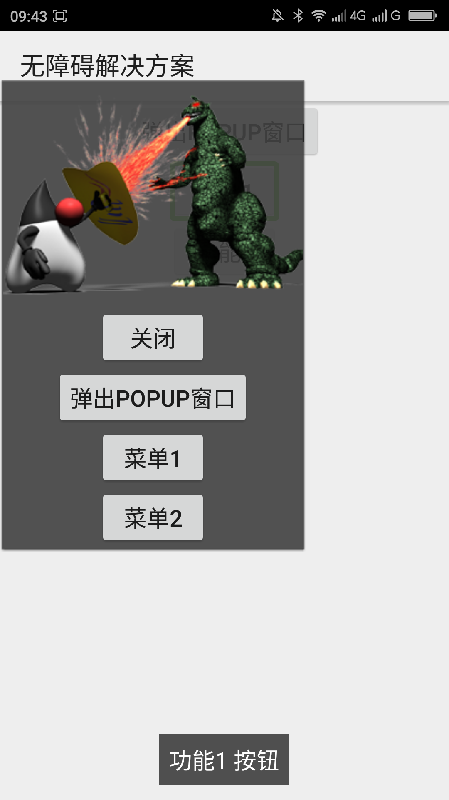
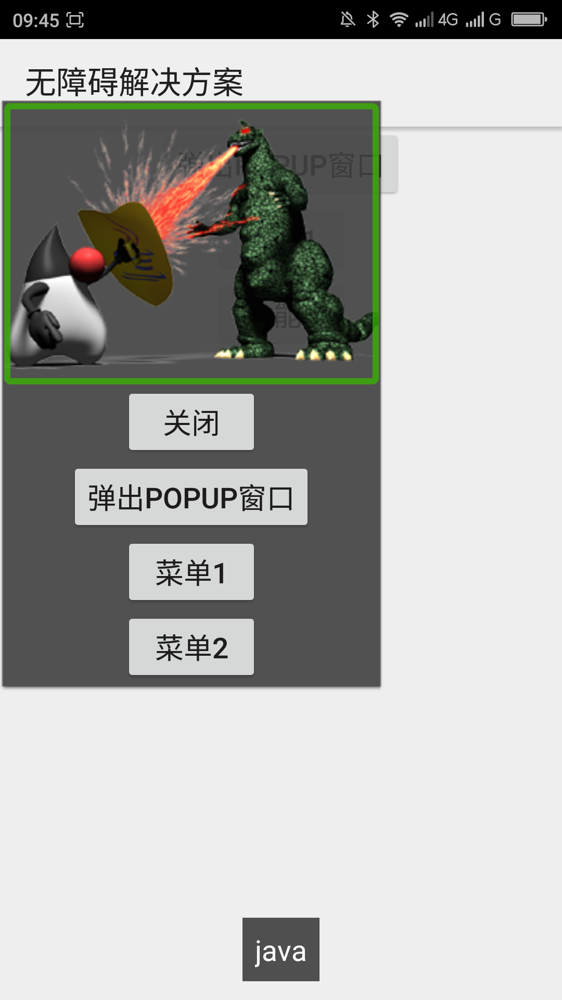

屏蔽浮窗的底层焦点（屏蔽之后不能对浮窗以外的元素进行操作）____20160527
【问题描述】
当浮窗弹出之后用户滑动或触摸浏览的时候能浏览到被浮窗覆盖的元素，用户会以为这些元素是可以操作的，但是实际上这些元素是不可以操作的。这样会给用户操作应用带来一些困扰。
【问题代码】
下面的代码实现了点击最上面的按钮会弹出一个浮窗。这个浮窗会覆盖底层的按钮，但是滑动浏览的时候底层的按钮还是能浏览到。
注意：MainActivity.xml布局代码请参见“附1“、popup.xml布局代码请参见“附2”。
复制内容
【问题解决方案描述】
PopupWindow类有一个方法是setFocusable()，这个方法用于设置PopupWindow是否有焦点，当PopupWindow有焦点的时候（也就是setFocusable(true)的时候）用户无法滑动或触摸浏览到被PopupWindow覆盖的元素。请注意设置了此属性之后无法与PopupWindow区域之外的元素进行交互。
【解决方案】
下面的代码利用setFocusable(true)这行代码把PopupWindow设置为有焦点，这样屏幕阅读器用户就不能浏览到被浮窗覆盖的元素了。注意这样做之后无法与浮窗之外的区域中的元素进行交互。
复制内容
【前后效果图对比】
|  |  |
| 优化前，双击“弹出POPUP窗口”按钮，弹出浮窗，向右滑动浏览，可遍历到底层焦点； | 优化后，双击“弹出POPUP窗口”按钮，弹出浮窗，向右滑动浏览，聚焦浮窗内元素； |